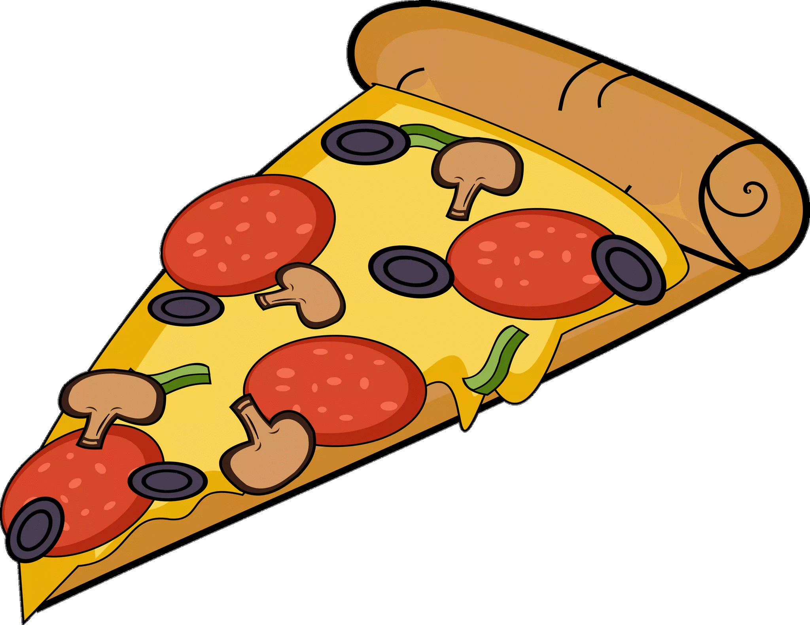

Пица

Пица с пепероне, маслини и гъби
Продукти:
- готови блатове за пица
- доматено пюре - 1 к.ч.
- маслини - 10 бр.
- риган
- пепероне
- кашкавал - 100 г
- магданоз
- гъби - консерва 100 г
- зехтин - 3 с.л.
Начин на приготвяне:
Готовите блатове се намазват с доматено пюре и се поръсват с риган. Отгоре се разпределят отцедените от течността и нарязани ситно гъби.
Маслините се почистват от костилката и се нарязват на парченца, разпределят се върху всеки блат.
Пеперонето се нарязва на кръгове. Поръсваме с настърган кашкавал, залива се с една лъжица зехтин и запичаме в загрята фурна 180 градуса до зачервяване.
Поднасяме с клонки пресен магданоз.
Пицата остава нарязана на витрина и се взима готова от клиента.